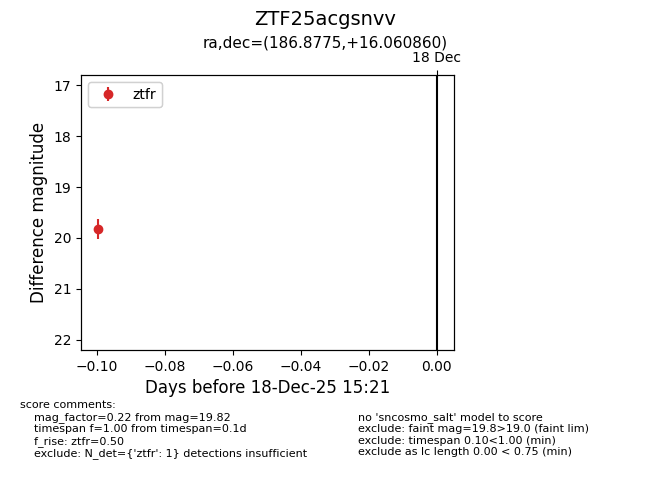
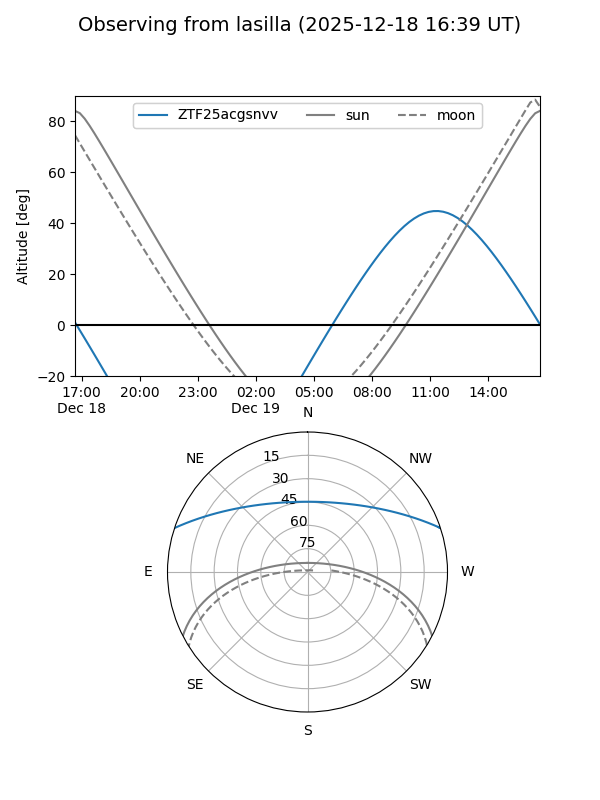
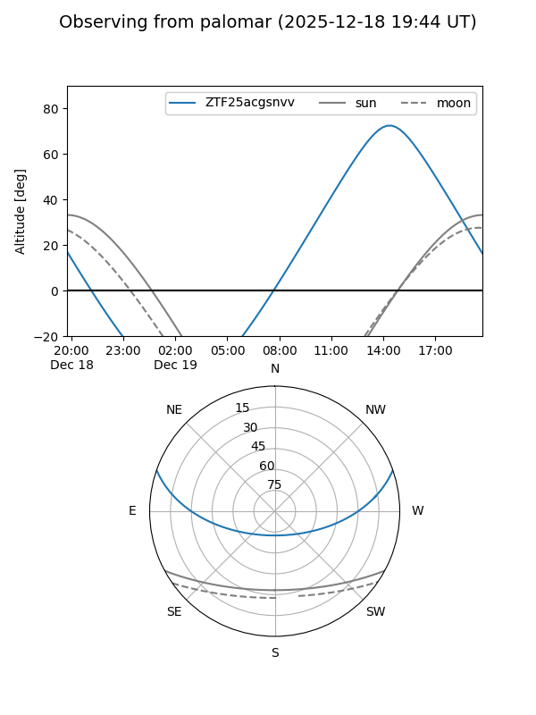

ZTF25acgsnvv
Target ZTF25acgsnvv at 2025-12-18 15:23
Aliases and brokers:
FINK: fink-portal.org/ZTF25acgsnvv
Lasair: lasair-ztf.lsst.ac.uk/objects/ZTF25acgsnvv
ALeRCE: alerce.online/object/ZTF25acgsnvv
alt names
ZTF25acgsnvv (ztf,fink_ztf)
Coordinates:
equatorial (ra, dec) = 186.8775,+16.06086
equatorial (HMS+DMS) = 12:27:30.59,+16:03:39.10
galactic (l, b) = (275.0857,+77.61941)
Photometry
last ztfr=19.82
1 ztfr detections
Lightcurve

Visibility


Additional plots